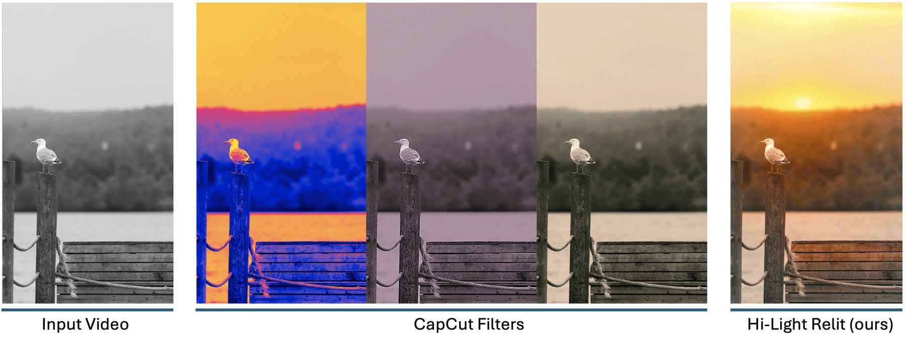
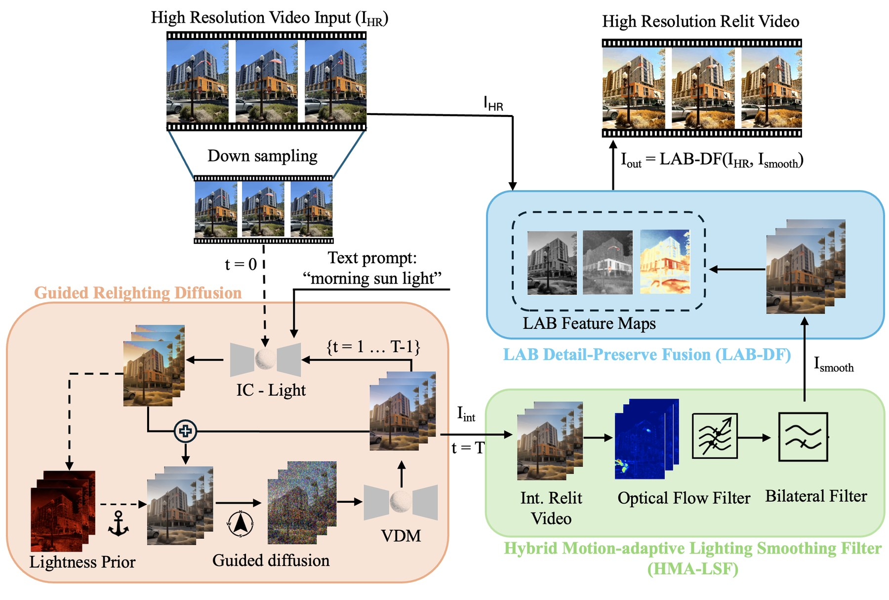
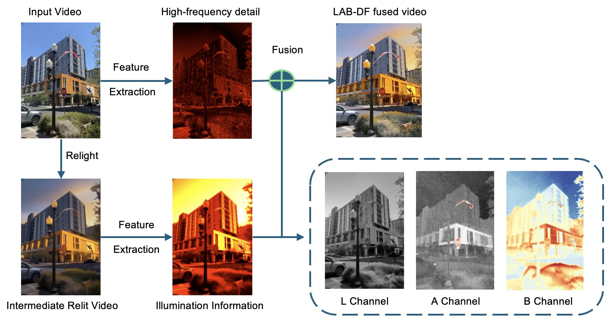
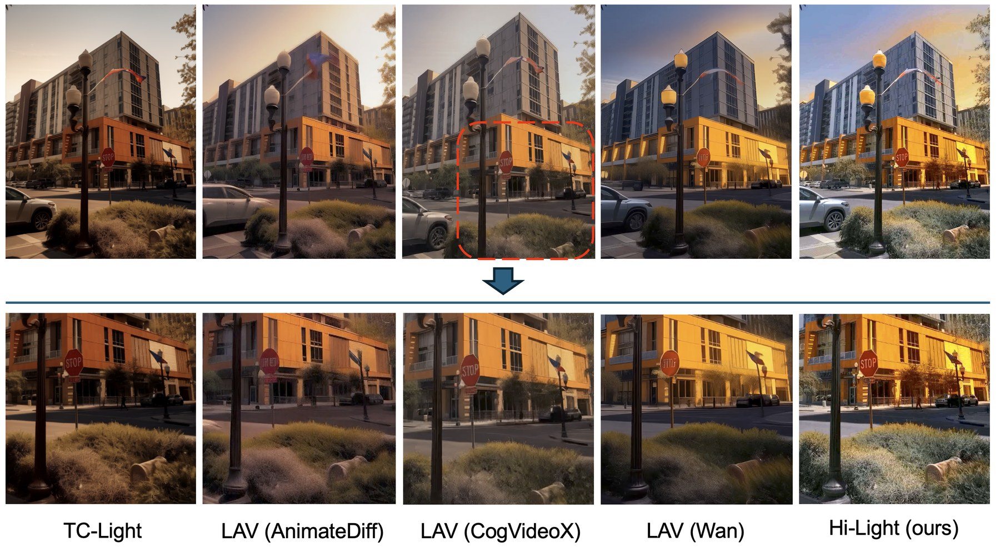
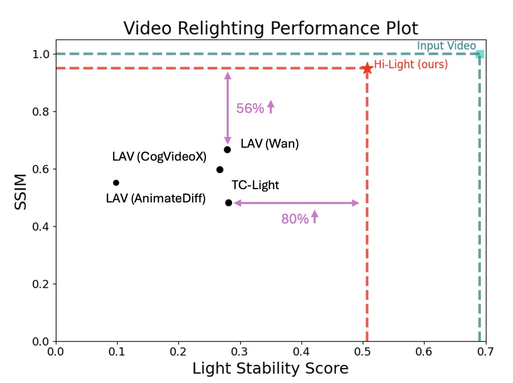
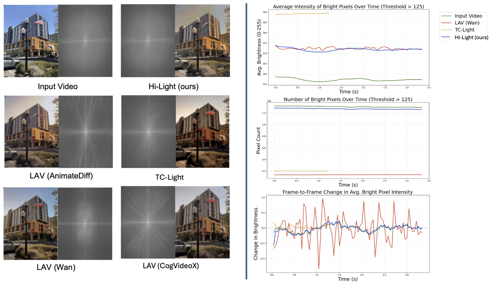

“Lighting is the blank page. It's the canvas. It's the thing that you start with — you can't do anything until you have a light.”
Video relighting offers immense creative potential and commercial value, yet remains hindered by three persistent challenges: severe light flickering, the degradation of fine-grained detail, and the absence of an adequate evaluation metric.
We introduce Hi-Light, a novel, plug-and-play framework that delivers high-fidelity, high-resolution video relighting through three technical innovations: a lightness-prior anchored guided relighting diffusion that stabilises intermediate relit video, a Hybrid Motion-Adaptive Lighting Smoothing Filter that leverages optical flow to ensure temporal stability without motion blur, and a LAB-based Detail Fusion module that preserves high-frequency information from the original video.
To address the evaluation gap, we further propose the Light Stability Score — the first quantitative metric designed specifically to measure lighting consistency over time. Hi-Light significantly outperforms state-of-the-art methods in both qualitative and quantitative comparisons, producing stable, highly detailed relit videos.

The only method capable of processing high-resolution video on a single GPU, extending accessibility to a wider community of users without specialised hardware or paired-light datasets.
A lightness-prior–anchored progressive fusion scheme paired with HMA-LSF (flicker removal) and LAB-DF (texture restoration). Drop-in to any video diffusion backbone.
The Light Stability Score — the first quantitative metric for lighting consistency — complements standard fidelity metrics, with 95.6% rank-1 agreement against a 30-rater blind human study.
Hi-Light decouples the problem: generate stable lighting on a downsampled latent, then project it back onto the high-resolution source. Each module surgically targets one failure mode of existing SOTA.

A static, DC-insensitive residual extracted from the input's L channel is injected at every diffusion step (γ = 0.3), damping low-to-mid-frequency luminance oscillations without drifting global brightness.
An optical-flow-aware motion-adaptive blend (Farneback, CPU-only) cancels flicker on stable regions while a bilateral filter removes residual compression noise — without smearing fast-moving objects.
Inverts the transfer: the input's L carries the detail, only the low-frequency illumination from the relit L is added back. The relit chroma (A, B) preserves the new colour. No afterimages.

Evaluated on 100 clips spanning 1080p–2160p, 81 frames at 24 fps, indoor / outdoor, static / dynamic, portrait / environment. Hyperparameters fixed across all comparisons.

| Model | SSIM ↑ | LPIPS ↓ | FID ↓ | VBench ↑ | SLS ↑ |
|---|---|---|---|---|---|
| TC-Light | 0.484 | 0.464 | 120 | 0.718 | 0.281 |
| LAV (AnimateDiff) | 0.552 | 0.434 | 241 | 0.714 | 0.098 |
| LAV (CogVideoX) | 0.597 | 0.402 | 133 | 0.736 | 0.267 |
| LAV (Wan) | 0.604 | 0.395 | 135 | 0.728 | 0.279 |
| Hi-Light ★ | 0.943 | 0.247 | 76 | 0.736 | 0.509 |
Table 01 · Quantified comparison against open-source SOTA. Hi-Light achieves the best score on every metric — the largest margin appearing on SSIM (+56%) and Light Stability (+80%).

